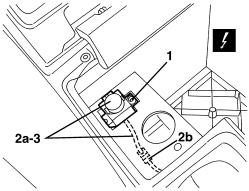

7015B81 TAILGATE OPENING CONTROL SWITCH - R.R.
- Path
- Procedures > 70 FITTINGS > 7015 TAILGATE/FLAP > 7015B TAILGATE CLOSING/OPENING DEVICES > 7015B81 TAILGATE OPENING CONTROL SWITCH - R.R.
- Kind
- repair procedure (removal / refitting; the operation number is the code)
- Applies to
- all engines; all production periods
- Interactive page
- https://sloeber94.github.io/elrnDB-aBrrSpdr/en/#/946002556
Applies to: all engines; all production periods
 Removing
Removing
 Refitting
RefittingOp. 7040L75 GLOVE COMPARTMENT ON REAR TUNNEL TRIM R. R.
1. Undo the bolt.
2. Extract the switch and bridge (2a) and disconnect the electrical connection (2b).
Description | Component |
|---|---|
CENTRAL BOOT OPENING CONTROL SWITCH |
3. Keep the switch and wiring.

Applies to: all engines; all production periods
Refitting
Removing- Check that the switch is not damaged.
- Connect the electrical connection.
- Place the switch and wiring in position.
- Tighten the bolt.
Topics linked from this page (2)
Topics that link to this page (7)
- P014 BOOT OPENING/CLOSING NOT WORKING
- E2535 CONTROLS LIGHTING - WIRING DIAGRAM
- E2535 CONTROLS LIGHTING - COMPONENT LOCATION
- E3045 BOOT AND FUEL FLAP OPENING - WIRING DIAGRAM
- E3045 BOOT AND FUEL FLAP OPENING - COMPONENT LOCATION
- E3045 BOOT AND FUEL FLAP OPENING - WIRING DIAGRAM
- E3045 BOOT AND FUEL FLAP OPENING - COMPONENT LOCATION